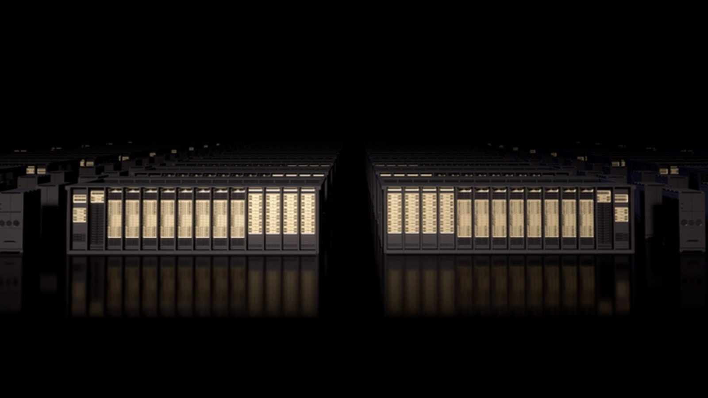

Tagesthema ·
Die Crash-Woche: Nasdaq minus 10 Prozent, Nvidia minus 23 Prozent. Was an der Börse gerade passiert
Sieben Verlusttage in Folge, die schlechteste Woche seit April 2025, der Nasdaq für 2026 wieder im Minus. Der Ausverkauf trifft vor allem die Gewinner des KI-Booms. Wer verloren hat, wer gehalten hat und was die Woche ausgelöst hat.
Redaktion Vision Universe · Stand 21.11.2026, 08:00 Uhr · 4 Min. Lesezeit

Am Freitag kam der Ausverkauf dieser Woche zum Höhepunkt. Der S&P 500 fiel um 3,7 Prozent auf 6.910 Punkte, der Nasdaq Composite um 5,3 Prozent, der Dow Jones um 1,9 Prozent. Es war der siebte Verlusttag in Folge für den S&P 500, die längste Serie seit dem Beginn der Corona-Pandemie 2020, so die Associated Press. Der Index liegt mehr als 10 Prozent unter seinem Rekord vom 6. Oktober. Damit ist er offiziell in einer Korrektur, zum ersten Mal seit März 2025.
Über die ganze Woche verlor der S&P 500 8,6 Prozent, die schlechteste Woche seit April 2025. Der Nasdaq gab 10 Prozent ab, knapp die schlechteste Woche seit März 2020, und liegt für 2026 nun 2,7 Prozent im Minus. Der Dow verlor 8 Prozent, die kleineren Werte im Russell 2000 7,5 Prozent. Der Ausverkauf war global: Japans Nikkei und Südkoreas Kospi fielen laut AP in der Nacht auf Freitag jeweils um mehr als 5 Prozent, auch Europas Börsen gaben deutlich nach.
Quelle: Associated Press
Das Epizentrum: Chipaktien
Am härtesten traf es die Unternehmen, die am meisten vom Bau der KI-Rechenzentren profitiert hatten. Am Freitag allein fiel der Halbleiterindex der Börse Philadelphia um 10,7 Prozent. Micron verlor laut AP 13,9 Prozent, Nvidia 13,8 Prozent, AMD 13,3 Prozent und Broadcom 12,1 Prozent. Auch Zulieferer jenseits der Chips stürzten ab: der Glas- und Glasfaserhersteller Corning um 10,9 Prozent, der Brennstoffzellen-Anbieter Bloom Energy, der Rechenzentren mit Strom versorgt, um 15,3 Prozent.
Über die Woche summiert sich das nach unseren Daten zu Verlusten, die man sonst nur aus Krisenjahren kennt. Bloom Energy fiel vom Schluss am 13. November bis zum Freitag um 25,8 Prozent, Micron um 23,6, Nvidia um 22,9, AMD um 20,5 und Oracle um 19,3 Prozent. Nvidia fiel laut AP an neun der letzten zehn Handelstage. Seit dem Chefwechsel Anfang des Monats hat die Aktie laut AP mehr als 25 Prozent verloren.
eigene Rechnung aus Tagesschlusskursen · Quelle: Vision Universe, Schlusskurse 13.11. bis 20.11.2026
Was den Ausverkauf auslöst
Einen einzelnen Auslöser gibt es nicht, eher eine Häufung. Der KI-Handel verliert laut AP schon seit Wochen an Schwung, weil Zweifel wachsen, ob die hohen Börsenwerte und die gewaltigen Investitionen in Rechenzentren gerechtfertigt sind. Verstärkt wurden die Sorgen durch die Zwischenwahlen: Kandidaten, die den Bau neuer Rechenzentren bremsen wollen, haben laut AP auf Bundes- und Landesebene gewonnen. Bei Nvidia kommt die Unsicherheit über die Zeit nach dem abrupten Abgang von Mitgründer Jensen Huang hinzu.
Auch der größte Börsengang der Geschichte hat die Stimmung nicht gedreht. Anthropic fiel am Freitag um 9,1 Prozent auf 88,30 Dollar, liegt aber noch über dem Ausgabepreis von 83 Dollar. Vom Tageshoch des ersten Handelstags bei 115,10 Dollar sind das rund 23 Prozent weniger. Michael Antonelli von der Bank Baird sagte laut AP, die Vorstellung unbegrenzter KI-Ausgaben, die den Markt tragen, ende gerade. Er glaube aber nicht, dass der Bullenmarkt, der im Oktober 2022 begann, damit vorbei sei.

„Die Vorstellung, dass KI unbegrenzt Geld ausgeben und den Aktienmarkt tragen kann, endet gerade, während wir sprechen. Das wird jetzt eingepreist.“
Michael Antonelli, Marktstratege bei Baird, laut Associated Press (übersetzt)
Wer gehalten hat
Der Crash war kein Ausverkauf von allem. Von den 5.512 US-Aktien in unseren Daten mit einem Freitagskurs schlossen 4.264 im Minus, aber immerhin 840 im Plus. Gewonnen haben vor allem die klassischen Verteidiger: Walmart stieg am Freitag um 1,5 Prozent, Johnson & Johnson um 1,2, Coca-Cola und Procter & Gamble um je 0,9 Prozent. Laut AP legten auch General Mills (plus 3,7 Prozent) und der Hausbauer Lennar zu.
Über die Woche zeigt sich das Muster noch deutlicher. Walmart und Procter & Gamble lagen nach unseren Daten am Freitag praktisch auf dem Stand der Vorwoche, Coca-Cola 2,3 Prozent darunter, Apple 3,8 Prozent. Microsoft und Amazon verloren je rund 7,5 Prozent, deutlich weniger als die Chipwerte. Anleger haben also nicht den Markt verlassen, sondern umgeschichtet: weg von allem, was am KI-Ausbau hängt, hin zu Konsum, Pharma und Lebensmitteln.
eigene Rechnung aus Tagesschlusskursen · Quelle: Vision Universe, Schlusskurse 13.11. bis 20.11.2026
Was unsere Daten zeigen
Nvidia zeigt, wie weit Geschäft und Kurs gerade auseinanderlaufen. Nach unseren Daten schloss die Aktie am Freitag bei 125,53 Dollar, 48 Prozent unter ihrem Hoch und 33 Prozent unter dem Stand von vor zwölf Monaten. Der Börsenwert liegt bei rund 3,05 Billionen Dollar. Unser Trendmodul steht auf negativ, die relative Stärke gegenüber dem Gesamtmarkt bei 14 von 100.
Die Geschäftszahlen erzählen das Gegenteil: Der Umsatz wuchs über zwölf Monate um 83 Prozent, die Nettomarge liegt bei 56 Prozent, unser Gesundheitscheck bewertet Wachstum, Profitabilität und Cashflow als sehr stark. Das Kurs-Gewinn-Verhältnis ist auf 15,9 gefallen. Zum Vergleich Walmart, der Gewinner der Woche: Kurs-Gewinn-Verhältnis 46, Umsatzwachstum 6 Prozent, Trend positiv, nur gut 5 Prozent unter dem Hoch. Der Markt bezahlt im Moment Sicherheit, nicht Wachstum.
Wie es weitergeht
Ob aus der Korrektur ein Bärenmarkt wird, also ein Minus von mehr als 20 Prozent vom Hoch, lässt sich heute nicht sagen. Korrekturen von 10 Prozent kommen an der Börse regelmäßig vor; die letzte im S&P 500 liegt laut AP erst gut anderthalb Jahre zurück. Ungewöhnlich ist diesmal die Wucht, mit der es eine einzige Branche trifft, die zuvor einen großen Teil der Kursgewinne getragen hatte. Laut AP sind es genau diese Werte mit ihren hohen Börsenwerten, die erst die Gewinne und jetzt den Absturz bestimmen.
In der kommenden Woche ist der Kalender wegen Thanksgiving kurz: Die US-Börsen sind am Donnerstag geschlossen und handeln am Freitag nur verkürzt. In unserer App lässt sich für jede Aktie verfolgen, wie Trend, Bewertung und Geschäftszahlen zusammenpassen. Der Artikel ist keine Empfehlung, sondern eine Einordnung der Woche.
Termine
- 20.11.2026S&P 500 schließt in der Korrektur, siebter Verlusttag in Folge
- 26.11.2026Thanksgiving: US-Börsen geschlossen
- 27.11.2026US-Börsen: verkürzter Handel
Quellen
- Associated Press via NPR: S&P 500 sinks 3.7% and the Nasdaq composite goes negative for the year, 20.11.2026
- Associated Press via myMotherLode: How major US stock indexes fared Friday 11/20/2026, 20.11.2026
- The Business Journal (Associated Press): S&P 500 drops 3.7% as Nasdaq turns negative for 2026, 20.11.2026
- New York Stock Exchange: Holidays and Trading Hours, 2026
Zitate aus englischen Quellen sind übersetzt. Kurse, Kennzahlen und Fondsdaten im Kasten stammen aus Vision Universe (Stand siehe Kasten). Angabe Dritter: zusammengefasste Einschätzungen externer Analysten bzw. Pflichtmeldungen an die SEC, unverändert mit Quelle und Datum. Nicht von Vision Universe erstellt und keine Einschätzung von Vision Universe. Dieser Artikel wurde automatisch erstellt und vor der Veröffentlichung gegen die genannten Quellen geprüft.
Vision Universe
Diese Aktie mit allen Zahlen
Kurs, Bewertung, Geschäftszahlen, Chart und was große Fonds tun: In Vision Universe steht zu jeder Aktie dieselbe Analyse, auf der dieser Artikel aufbaut.
Artikel in Vision Universe öffnen→ Zum Start der App benachrichtigen